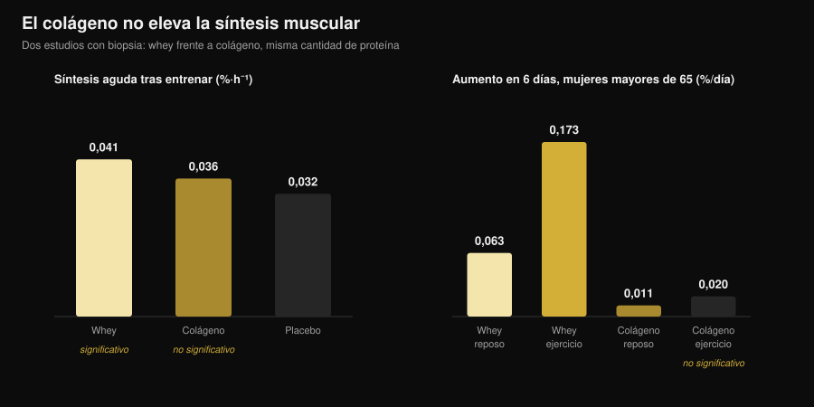
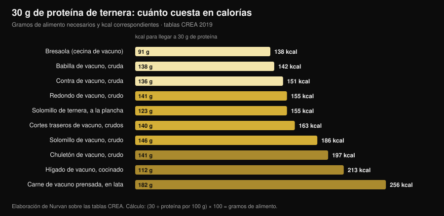

Beef protein: ¿la proteína de carne vale como la whey?
Las búsquedas de "beef protein powder" han crecido un 467% y el bote promete lo más lógico del mundo: si el músculo es carne, come carne. Sobre el papel se sostiene, y el mayor metanálisis le da la razón: la carne empata con la whey. El problema es que "beef protein" en la etiqueta dice de qué animal viene ese polvo, no de qué parte. Y esa diferencia es la que separa un suplemento que funciona de uno que no hace nada.

En resumen
- Frente a la whey es un empate. Metanálisis de 7 estudios y 270 personas: ninguna diferencia entre proteína de vacuno y suero de leche en masa magra (diferencia estandarizada −0,01), masa grasa (0,07) ni proteína total ingerida (0,04).
- Frente a no suplementar, en cambio, gana. Respecto a quien no toma nada, la carne aumenta masa magra (0,34) y fuerza del tren inferior (0,40). Pero es el efecto de "más proteína al día", no de "más ternera".
- La palabra que importa en la etiqueta es colágeno. En los polvos derivados del colágeno la síntesis proteica muscular no se mueve: en mujeres mayores de 65, en seis días, la whey la elevó 0,173 %/día en la pierna entrenada y el colágeno 0,020, un valor indistinguible del punto de partida.
- Y la etiqueta no siempre acierta. Un análisis italiano de cinco suplementos deportivos del mercado encontró casos en los que los aminoácidos presentes no coincidían con los declarados por el fabricante.
- La ventaja real de la ternera es el hierro. En triatletas máster, diez semanas de proteína de vacuno llevaron la ferritina de 117 a 150 ng/mL; con whey y carbohidratos no ocurrió.
Por qué todo el mundo habla de beef protein
El razonamiento que vende el producto es simple e intuitivo: el músculo está hecho de proteína animal, la carne roja es la proteína animal por excelencia, así que un polvo de vacuno debería ser la vía más directa para construir músculo. Se añaden tres argumentos prácticos: nada de lactosa, nada de lácteos para quien sigue dietas carnívoras o paleo, y el hierro hemo que la whey no tiene.
Ninguno de esos puntos es absurdo. El problema es que "beef protein" es un nombre comercial, no una especificación técnica. Indica el animal de origen, no la parte. Y de una res salen dos materias primas muy distintas que pueden convertirse en polvo.
Qué hay de verdad dentro del bote
La primera materia prima es el músculo: carne magra hidrolizada o aislada, con un perfil de aminoácidos esenciales parecido al del filete que te comerías. Es la que usaron los estudios serios sobre beef protein, y funciona.
La segunda es el colágeno: recortes, piel, tendones, tejido conectivo. Es proteína a todos los efectos, pesa como proteína en la tabla nutricional, cuesta mucho menos y se procesa muy bien en polvo. Pero su perfil de aminoácidos está desequilibrado — muchísima glicina y prolina, poquísima leucina — y la leucina es el aminoácido que enciende la construcción de proteína muscular. Un polvo de colágeno puede declarar 25 g de proteína por ración y no mover ni un milímetro la síntesis muscular.
No es una sospecha: se ha medido tres veces con técnicas distintas. En adultos jóvenes, 30 g de colágeno después de entrenar no aumentaron de forma significativa la síntesis de las proteínas contráctiles frente al placebo, mientras que 30 g de whey sí (Aussieker et al., 2023). En mujeres mayores de 65, seis días de suplementación: la whey elevó la síntesis tanto en reposo como en la pierna entrenada, el colágeno en ninguna de las dos (Oikawa et al., 2020). En hombres mayores, 50 g diarios por encima de la cantidad recomendada aumentaron la síntesis con whey y con guisante, pero no con colágeno (McKendry et al., 2024).

Y aunque la materia prima sea la correcta, la etiqueta no es una garantía automática: un grupo de la Universidad de Milán caracterizó la fracción proteica de cinco suplementos deportivos comerciales y encontró proteínas muy glicosiladas y, en algunos casos, aminoácidos añadidos que no coincidían con los declarados, concluyendo que harían falta análisis de lote obligatorios (Pellegrino et al., 2022).
Qué dice realmente la investigación
| Afirmación habitual | Veredicto | Fuente |
|---|---|---|
| "La ternera construye más músculo que la whey" | Desmentido: empate | Valenzuela et al., 2019 |
| "El beef protein no sirve para nada" | Desmentido, con matiz | Valenzuela et al., 2019 |
| "Es carne, así que es proteína completa" | A matizar: depende de la materia prima | Oikawa 2020; Aussieker 2023; McKendry 2024 |
| "El polvo es mejor que la carne de verdad" | Desmentido | Negro et al., 2014 |
| "Sin lactosa, la ternera es la única opción" | Desmentido | Sharp et al., 2018 |
| "Cuanto más tomas, más creces" | Desmentido | McKenna et al., 2021 |
| "Ayuda con el hierro" | Confirmado, en un contexto concreto | Naclerio et al., 2017 |
Afirmación 1 — "La ternera construye más músculo que la whey"
Es la comparación directa y la respuesta es un empate claro. Una revisión sistemática con metanálisis reunió siete ensayos aleatorizados con 270 personas que entrenaban con pesas, comparando proteína de vacuno, whey y ninguna suplementación. Entre ternera y whey no apareció ninguna diferencia: proteína total ingerida 0,04, masa magra −0,01, masa grasa 0,07 — diferencias estandarizadas próximas a cero y ninguna estadísticamente significativa.
Los estudios individuales dicen lo mismo. Ocho semanas con 46 g de proteína después de entrenar: aislado de vacuno, pollo hidrolizado y concentrado de whey aumentaron todos la masa magra frente al inicio, la maltodextrina de control no, y entre las tres proteínas no hubo diferencias de fuerza (Sharp et al., 2018).
Afirmación 2 — "El beef protein no sirve para nada"
Tampoco se sostiene. En el mismo metanálisis, frente a quien no suplementaba, la ternera aumentó la proteína diaria ingerida (0,68), la masa magra (0,34) y la fuerza del tren inferior (0,40). Son efectos pequeños, pero reales.
El matiz importa: casi con seguridad no es un efecto de la ternera, sino de llegar a una cuota proteica adecuada. Los autores lo escriben con claridad, y otro estudio lo deja aún más a la vista: en hombres que entrenaban con pesas, 20 g diarios de vacuno hidrolizado, de whey o solo carbohidratos produjeron mejoras de fuerza prácticamente equiparables, con diferencias mínimas en composición corporal (Naclerio et al., 2017). Si tu dieta ya lleva suficiente proteína, el bote añade poco.
Afirmación 3 — "Cuanto más tomas, más creces"
Diez semanas de entrenamiento con pesas en adultos de mediana edad, con asesoramiento dietético y proteína de carne magra de vacuno: un grupo en torno a 1,0 g por kg de peso al día, el otro en torno a 1,6. La fuerza máxima aumentó en todos los ejercicios, sin ningún efecto de la cantidad de proteína (McKenna et al., 2021). Pasado cierto umbral, añadir polvo no añade resultado: es el mismo principio que rige los horarios de toma, como vi en el artículo sobre cuándo tomar los suplementos.
Afirmación 4 — "El polvo es mejor que la carne de verdad"
Un estudio italiano hizo la prueba más directa posible: 135 g de carne magra en lata después de entrenar, es decir 20 g de proteína y 1,7 g de grasa, durante ocho semanas. El grupo que la comía perdió 1,9 kg de masa grasa y ganó 2,3 kg de masa libre de grasa; el grupo de control sin suplementación no (Negro et al., 2014). Carne de verdad, cero polvo, mismo resultado. Los autores la describen como "una estrategia nutricional añadida a otras proteínas o suplementos de aminoácidos": una opción, no una superioridad.
Afirmación 5 — "Ayuda con el hierro"
Aquí la ternera tiene una ventaja propia, y se ve en quien la necesita. En triatletas máster de 35 a 60 años, diez semanas con 20 g diarios de proteína de vacuno aumentaron la ferritina de 117 a 150 ng/mL, mientras que whey y carbohidratos no produjeron cambios; en ese mismo grupo se preservó el grosor del vasto medial, algo que no ocurrió en los otros dos (Naclerio et al., 2017).
Hay que leerlo por lo que es: un resultado en deportistas de resistencia, donde las reservas de hierro suelen estar bajo presión. En el metanálisis anterior, la ternera no aumentó de forma estadísticamente significativa el hierro ingerido frente a no suplementar. Y si sospechas una carencia, el único camino sensato es un análisis de sangre y un médico, no un suplemento elegido por tu cuenta.
La cuenta de las calorías: carne real contra polvo
Si el sentido del beef protein es sacar la proteína del vacuno, conviene saber cuánto cuesta hacerlo con la carne. He calculado sobre las tablas CREA cuántos gramos de cada corte hacen falta para llegar a 30 g de proteína, la cantidad usada en la mayoría de los estudios de síntesis muscular, y cuántas calorías trae consigo.

El resultado es que la carne magra no es nada cara en calorías: 138 g de babilla cruda dan 30 g de proteína con 142 kcal, poco más que una ración de pechuga de pollo. Noventa y un gramos de bresaola hacen lo mismo con 138 kcal. En el extremo opuesto, la carne prensada en lata pide 182 g y 256 kcal para la misma cuota, y un chuletón pide 197.
Una ración de polvo suele estar entre 100 y 130 kcal por 25-30 g de proteína: en la práctica lo mismo que la babilla, con dos diferencias prácticas. El polvo se transporta, se bebe en treinta segundos y se dosifica al gramo; la carne sacia, cuesta menos por gramo de proteína y no exige ningún examen de la etiqueta. La elección es logística, no fisiológica.
Cómo aplicarlo
- Cuenta primero la proteína que ya comes. Si rondas 1,6 g por kg de peso al día repartidos en las comidas, el margen de mejora de cualquier polvo es pequeño: el estudio de 1,0 frente a 1,6 g/kg no halló ventaja en subir más.
- Lee los ingredientes, no el frente del bote. Busca "colágeno", "colágeno hidrolizado", "gelatina" o "proteína bovina hidrolizada" sin más detalle. Si aparecen en las primeras posiciones, ese polvo no sustituye a la whey.
- Busca el perfil de aminoácidos en la etiqueta. Sin leucina declarada (orientativamente 2-3 g por ración en las fuentes de alto valor biológico) no tienes forma de saber qué estás comprando.
- No pagues un sobreprecio por "es carne". En resultados de gimnasio, ternera y whey empatan. Si la ternera cuesta más y no tienes un motivo concreto para elegirla, no lo tienes.
- El motivo concreto existe en dos casos. Intolerancia marcada a la lactosa o exclusión de lácteos: ahí la ternera es una elección sensata, pero no la única — en la comparación directa el pollo hidrolizado también funcionó.
- Para el hierro, pasa por los análisis. Ferritina baja, cansancio, carga de resistencia: son cosas que se miden y se hablan con un médico, no que se gestionan con un suplemento comprado por internet.
Prueba Nurvan — la proteína contada con datos reales, no a ojo
La parte de nutrición de Nurvan trabaja sobre una base de datos oficial de composición de alimentos: registras lo que comes y ves cuánta proteína te están dando de verdad las comidas, día a día. En la sección de suplementación anotas qué tomas y cuándo, y en el mismo perfil tienes las cargas de entrenamiento y los análisis que has subido. Así la pregunta "¿necesito un polvo?" deja de ser una impresión y se convierte en un número.
Preguntas frecuentes
¿El beef protein es mejor que la whey?
No, empata. El metanálisis de siete ensayos aleatorizados y 270 personas no encuentra diferencias entre proteína de vacuno y whey en masa magra, masa grasa ni proteína total ingerida (Valenzuela et al., 2019). Elige por tolerancia, precio y preferencia.
¿Cómo sé si un beef protein está hecho con colágeno?
Por la lista de ingredientes y el perfil de aminoácidos. Expresiones como colágeno hidrolizado, gelatina o "proteína bovina hidrolizada" sin más son la señal; una leucina no declarada o muy baja lo confirma. En los ensayos con biopsia muscular el colágeno no aumentó la síntesis proteica, ni en jóvenes ni en mayores.
¿El beef protein vale para intolerantes a la lactosa?
Sí, es una de las razones sensatas para elegirlo, pero no es la única opción: en la comparación directa a ocho semanas el pollo hidrolizado también aumentó la masa magra tanto como la ternera y la whey (Sharp et al., 2018), y los aislados de suero contienen cantidades mínimas de lactosa.
¿Mejor polvo de ternera o comer carne?
En resultados, la carne de verdad aguanta perfectamente: 135 g de carne magra en lata después de entrenar redujeron la masa grasa y aumentaron la masa libre de grasa en ocho semanas (Negro et al., 2014). El polvo solo gana en comodidad y precisión de dosis.
Lee también
- ¿Proteína vegetal o animal para el músculo? — qué pasa cuando la fuente proteica cambia de verdad, medido con biopsia.
- Tier list de suplementos de fuerza: qué dice la ciencia — dónde se sitúan las proteínas en polvo frente a creatina y cafeína.
- Cuándo tomar los suplementos: ¿importa la hora? — por qué la cantidad total pesa más que el momento de la toma.
Fuentes
Referencias bibliográficas recuperadas a través de PubMed. Tema elegido con la investigación de tendencias del 3 de noviembre de 2026: "beef protein powder" es una de las consultas de fitness que más crece, pero las páginas que la ocupan pertenecen casi todas a quien vende el polvo.
- Valenzuela PL, Mata F, Morales JS, Castillo-García A, Lucia A, 2019. Does Beef Protein Supplementation Improve Body Composition and Exercise Performance? A Systematic Review and Meta-Analysis of Randomized Controlled Trials. Nutrients 11(6):1429. PMID 31242624. DOI
- Sharp MH, Lowery RP, Shields KA, Lane JR, Gray JL, Partl JM, Hayes DW, Wilson GJ, Hollmer CA, Minivich JR, Wilson JM, 2018. The Effects of Beef, Chicken, or Whey Protein After Workout on Body Composition and Muscle Performance. Journal of Strength and Conditioning Research 32(8):2233-2242. PMID 28399016. DOI
- Naclerio F, Seijo M, Larumbe-Zabala E, Earnest CP, 2017. Carbohydrates Alone or Mixing With Beef or Whey Protein Promote Similar Training Outcomes in Resistance Training Males: A Double-Blind, Randomized Controlled Clinical Trial. International Journal of Sport Nutrition and Exercise Metabolism 27(5):408-420. PMID 28530448. DOI
- Naclerio F, Seijo M, Larumbe-Zabala E, Ashrafi N, Christides T, Karsten B, Nielsen BV, 2017. Effects of Supplementation with Beef or Whey Protein Versus Carbohydrate in Master Triathletes. Journal of the American College of Nutrition 36(8):593-601. PMID 28910233. DOI
- Negro M, Vandoni M, Ottobrini S, Codrons E, Correale L, Buonocore D, Marzatico F, 2014. Protein supplementation with low fat meat after resistance training: effects on body composition and strength. Nutrients 6(8):3040-9. PMID 25093275. DOI
- Oikawa SY, Kamal MJ, Webb EK, McGlory C, Baker SK, Phillips SM, 2020. Whey protein but not collagen peptides stimulate acute and longer-term muscle protein synthesis with and without resistance exercise in healthy older women: a randomized controlled trial. The American Journal of Clinical Nutrition 111(3):708-718. PMID 31919527. DOI
- Aussieker T, Hilkens L, Holwerda AM, Fuchs CJ, Houben LHP, Senden JM, van Dijk JW, Snijders T, van Loon LJC, 2023. Collagen Protein Ingestion during Recovery from Exercise Does Not Increase Muscle Connective Protein Synthesis Rates. Medicine and Science in Sports and Exercise 55(10):1792-1802. PMID 37202878. DOI
- McKendry J, Lowisz CV, Nanthakumar A, MacDonald M, Lim C, Currier BS, Phillips SM, 2024. The effects of whey, pea, and collagen protein supplementation beyond the recommended dietary allowance on integrated myofibrillar protein synthetic rates in older males: a randomized controlled trial. The American Journal of Clinical Nutrition 120(1):34-46. PMID 38762187. DOI
- Pellegrino L, Hogenboom JA, Rosi V, Sindaco M, Gerna S, D'Incecco P, 2022. Focus on the Protein Fraction of Sports Nutrition Supplements. Molecules 27(11):3487. PMID 35684425. DOI
- McKenna CF, Salvador AF, Hughes RL, Scaroni SE, Alamilla RA, Askow AT, Paluska SA, Dilger AC, Holscher HD, De Lisio M, Khan NA, Burd NA, 2021. Higher protein intake during resistance training does not potentiate strength, but modulates gut microbiota, in middle-aged adults: a randomized control trial. American Journal of Physiology-Endocrinology and Metabolism 320(5):E900-E913. PMID 33682457. DOI
Giammaria Loi es el fundador de Nurvan. Entrena con pesas desde 2012, trabaja como entrenador personal y coach certificado FIPE desde 2013 y compite en powerlifting a nivel nacional desde 2018. Cada artículo que firma parte de los estudios científicos y llega a lo que funciona de verdad en el gimnasio.
Nota: contenido informativo, no sustituye la opinión de un médico o profesional.